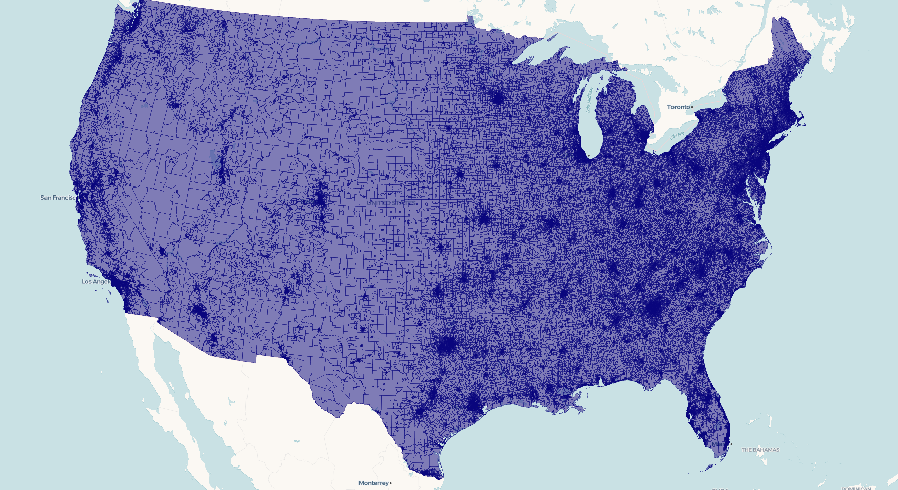
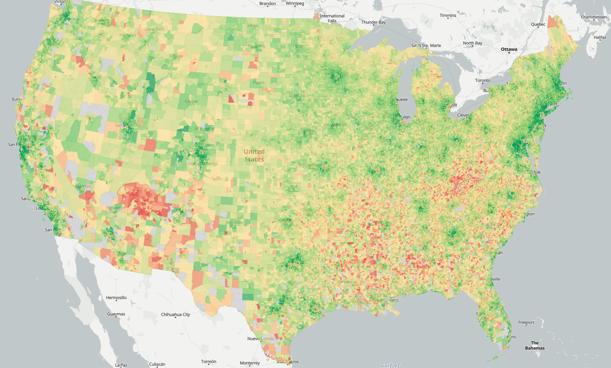

library(tidycensus)
library(freestiler)
options(tigris_use_cache = TRUE)
# Pulls data state-by-state, so will take a few minutes if
# geometries are not pre-cached
bgs <- get_acs(
geography = "block group",
variables = "B19013_001", # median household income
state = c(state.abb, "DC"),
year = 2024,
geometry = TRUE
)
freestile(
bgs,
"us_income.pmtiles",
layer_name = "income",
min_zoom = 4,
max_zoom = 12
)This article walks through viewing and styling freestiler tilesets with the mapgl package. We’ll build a national-level choropleth of median household income by Census block group — 242,000 polygons that render smoothly because they’re served as vector tiles.
Creating the tileset
First, pull block group geometries and income data with tidycensus:
The actual tiling takes a few minutes and produces a ~250 MB tileset. The output will include:
Created us_income.pmtiles (252.6 MB)
View with: view_tiles("us_income.pmtiles")Quick preview
For a fast look at your tileset, use view_tiles():
view_tiles("us_income.pmtiles")
This auto-detects the layer name, geometry type, and bounds from the PMTiles metadata, starts a local server, and opens an interactive map. It works for polygon, line, and point data without any extra configuration. FYI, for this specific example - given the USA’s bounding box, you’ll need to pan over to the continental US to view it.
Building a custom map
For control over styling, use serve_tiles() to start the local server, then build your map with mapgl. PMTiles require a server that supports CORS and HTTP range requests — serve_tiles() handles both.
library(mapgl)
serve_tiles("us_income.pmtiles")Now add the tileset as a source and style it:
maplibre(
style = openfreemap_style("positron"),
bounds = c(-125, 24, -66, 50),
) |>
add_pmtiles_source(
id = "income-src",
url = "http://localhost:8080/us_income.pmtiles",
promote_id = "GEOID"
) |>
add_fill_layer(
id = "income-fill",
source = "income-src",
source_layer = "income",
fill_color = interpolate(
column = "estimate",
values = c(20000, 50000, 100000, 200000),
stops = c("#d73027", "#fee08b", "#91cf60", "#1a9850"),
na_color = "#cccccc"
),
fill_opacity = 0.7,
hover_options = list(
fill_opacity = 1
),
tooltip = concat(
"Median income: $",
number_format(get_column("estimate"), locale = "en")
)
)
Key components:
-
add_pmtiles_source()registers the PMTiles file as a vector tile source. Thepromote_idparameter tells MapLibre which property to use as the feature ID (needed for hover/click interactivity). -
source_layermust match thelayer_nameyou used infreestile(). -
interpolate()creates a data-driven color ramp. MapLibre evaluates this per-feature on the GPU, so it’s fast even at 242K polygons. -
hover_optionshighlights features on mouseover. This requirespromote_idto be set on the source. -
tooltipusesconcat()andnumber_format()to build formatted hover text from feature properties.
Line and point layers
For line data, use add_line_layer():
maplibre() |>
add_pmtiles_source(
id = "roads-src",
url = "http://localhost:8080/roads.pmtiles"
) |>
add_line_layer(
id = "roads",
source = "roads-src",
source_layer = "roads",
line_color = "#4a90d9",
line_width = 1.5
)For point data, use add_circle_layer():
maplibre() |>
add_pmtiles_source(
id = "pts-src",
url = "http://localhost:8080/airports.pmtiles"
) |>
add_circle_layer(
id = "airports",
source = "pts-src",
source_layer = "airports",
circle_color = "orange",
circle_radius = 5,
circle_stroke_color = "white",
circle_stroke_width = 1
)Multi-layer tilesets
If your tileset has multiple layers (created with a named list in freestile()), add each layer separately — they share the same source:
maplibre() |>
add_pmtiles_source(
id = "nc-src",
url = "http://localhost:8080/nc_layers.pmtiles"
) |>
add_fill_layer(
id = "counties",
source = "nc-src",
source_layer = "counties",
fill_color = "navy",
fill_opacity = 0.3
) |>
add_circle_layer(
id = "centroids",
source = "nc-src",
source_layer = "centroids",
circle_color = "red",
circle_radius = 4
)Tile format considerations
freestiler defaults to MapLibre Tiles (MLT), which produces smaller files. view_tiles() and mapgl handle MLT natively with recent versions of MapLibre GL JS. If you’re sharing tiles with other tools or viewers, use tile_format = "mvt" for the widest compatibility:
freestile(bgs, "us_income_mvt.pmtiles",
layer_name = "income",
tile_format = "mvt"
)Serving larger tilesets
The built-in serve_tiles() server works well for files up to about 1 GB. For larger tilesets, use an external server with better concurrency. In your terminal, assuming you have Node’s http-server installed:
npx http-server /path/to/tiles -p 8082 --cors -c-1Then point your add_pmtiles_source() URL at http://localhost:8082/... instead. Stop the external server with Ctrl+C in the terminal when you’re done.
You’ll see better performance with this method than the built-in server for datasets below 1GB as well, like the block groups dataset in this example.
Cleaning up
When you’re done viewing with the built-in server, stop it with: